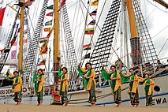
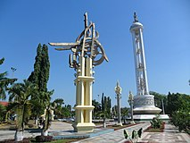
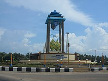
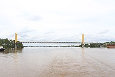
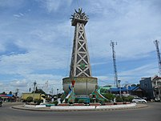
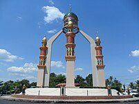
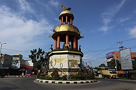

Kalimantan Selatan adalah salah satu provinsi yang berada di pulau Kalimantan, Indonesia. Sejak 16 Maret 2022, ibu kota provinsi ini resmi dipindah ke Kota Banjarbaru untuk menggantikan Kota Banjarmasin. Provinsi ini merupakan rumah bagi etnis Banjar dan memiliki luas 38.744,00 km² dengan populasi pada akhir tahun 2023 berjumlah 4.234.214 jiwa, dan wilayah administrasi terbagi menjadi 11 kabupaten dan 2 kota. DPRD Kalimantan Selatan dengan surat keputusan No. 2 Tahun 1989 tanggal 31 Mei 1989 menetapkan 14 Agustus 1950 sebagai Hari Jadi Provinsi Kalimantan Selatan. Tanggal 14 Agustus 1950 melalui Peraturan Pemerintah RIS No. 21 Tahun 1950, merupakan tanggal dibentuknya Provinsi Kalimantan, setelah pembubaran Republik Indonesia Serikat (RIS), dengan gubernur Dokter Moerjani. Secara historis wilayah Kalimantan Selatan mula-mula dibentuk merupakan wilayah Karesidenan Kalimantan Selatan (dengan Residen Mohammad Hanafiah) di dalam Provinsi Kalimantan itu sendiri.
Kawasan Kalimantan Selatan pernah dikuasai oleh tiga dinasti kerajaan secara berturut-turut, yakni Kerajaan Negara Dipa yang kemudian diteruskan oleh Kerajaan Negara Daha dan diteruskan lagi oleh Kesultanan Banjar.[17] Pada tanggal 19 Agustus 1945, Panitia Persiapan Kemerdekaan Indonesia menetapkan Kalimantan sebagai salah satu dari delapan provinsi di wilayah Indonesia.[18] Gubernur pertama untuk Provinsi Kalimantan ialah Pangeran Mohammad Noor.[19] ia menjabat sampai dibuatnya Perjanjian Linggarjati.
ALRI Divisi IV (A)
Sejarah pemerintahan di Kalimantan Selatan juga diwarnai dengan terbentuknya organisasi Angkatan Laut Republik Indonesia (ALRI) Divisi IV di Mojokerto, Jawa Timur yang mempersatukan kekuatan dan pejuang asal Kalimantan yang berada di Jawa. Dengan ditandatanganinya Perjanjian Linggarjati menyebabkan Kalimantan terpisah dari Republik Indonesia. Dalam keadaan ini pemimpin ALRI IV mengambil langkah untuk kedaulatan Kalimantan sebagai bagian wilayah Indonesia, melalui suatu proklamasi yang ditandatangani oleh Gubernur ALRI Hasan Basry di Kandangan 17 Mei 1949 yang isinya menyatakan bahwa rakyat Indonesia di Kalimantan Selatan memaklumkan berdirinya pemerintahan Gubernur tentara ALRI yang melingkupi seluruh wilayah Kalimantan Selatan (dan tengah). Wilayah itu dinyatakan sebagai bagian dari wilayah RI sesuai Proklamasi kemerdekaaan 17 Agustus 1945. Upaya yang dilakukan dianggap sebagai upaya tandingan atas dibentuknya Dewan Banjar oleh Belanda"
pembentukan Provinsi Kalimantan Selatan
Menyusul kembalinya Indonesia ke bentuk negara kesatuan kehidupan pemerintahan di daerah juga mengalamai penataaan. Provinsi Kalimantan pada masa itu terdiri atas 3 (tiga) karesidenan yaitu Karesidenan Kalimantan Barat, Karesidenan Kalimantan Selatan dan Karesidenan Kalimantan Timur. Provinsi Kalimantan, kemudian dipecah menjadi 3 provinsi, masing-masing Kalimantan Barat, Timur dan Selatan yang dituangkan dalam UU No. 25 Tahun 1956.Berdasarkan UU No. 21 Tahun 1957, sebagian besar daerah sebelah barat dan utara wilayah Kalimantan Selatan dijadikan Provinsi Kalimantan Tengah. Sedangkan UU No. 27 Tahun 1959 memisahkan bagian utara dari daerah Kabupaten Kotabaru dan memasukkan wilayah itu ke dalam kekuasaan Provinsi Kalimantan Timur. Sejak saat itu Provinsi Kalimantan Selatan tidak lagi mengalami perubahan wilayah, dan tetap seperti adanya. Adapun UU No.25 Tahun 1956 yang merupakan dasar pembentukan Provinsi Kalimantan Selatan kemudian diperbaharui dengan UU No. 10 Tahun 1957 dan UU No. 27 Tahun 1959 dan terakhir UU No. 8 Tahun 2022.
Kalimantan Selatan secara geografis terletak di bagian tenggara pulau Kalimantan.[20] Kawasan di Kalimantan Selatan terbagi menjadi kawasan dataran rendah di bagian barat dan pantai timur.[butuh rujukan] Sementara wilayah Kalimantan Selatan dari arah tenggara hingga ke perbatasan Provinsi Kalimantan Timur di utara merupakan kawasan pegunungan yang dibentuk oleh Pegunungan Meratus
Keaneka Ragaman HayatiKalimantan Selatan terdiri atas dua ciri geografi utama, yakni dataran rendah dan dataran tinggi. Kawasan dataran rendah kebanyakan berupa lahan gambut hingga rawa-rawa sehingga kaya akan sumber keanekaragaman hayati satwa air tawar. Kawasan dataran tinggi sebagian masih merupakan hutan tropis alami dan dilindungi oleh pemerintah.
Sumber Daya AlamKehutanan: Hutan Tetap (139.315 ha), Hutan Produksi (1.325.024 ha), Hutan Lindung (139.315 ha), Hutan Konvensi (348.919 ha) Perkebunan: Perkebunan Negara (229.541 ha) Bahan Galian: batu bara, minyak, pasir kwarsa, biji besi, dll
Sektor pertanian merupakan sektor yang paling banyak menyerap tenaga kerja. Pada bulan Februari 2012 tercatat sebanyak 38,20 persen tenaga kerja diserap sektor pertanian. Sektor perdagangan adalah sektor kedua terbesar dalam penyerapan tenaga kerja, yaitu sebesar 20,59 persen. Status pekerja di Kalimantan Selatan masih didominasi oleh pekerja yang bekerja di sektor informal. Pada Februari 2012 sebanyak 63,20 persen adalah pekerja di sektor informal. Sebagian besar dari pekerja tersebut berstatus berusaha sendiri (19,66 persen), berusaha dibantu buruh tidak tetap (18,92 persen) serta pekerja bebas dan pekerja tak dibayar (24,61 persen). Pekerja di sektor formal tercatat sebanyak 36,80 persen yaitu terdiri dari pekerja dengan status buruh/karyawan (33,35 persen) dan status berusaha dibantu dengan buruh tetap (3,45 persen).
Pertanian & PerkebunanHasil utama pertanian adalah padi, di samping jagung, ubi kayu, dan ubi jalar. Sedangkan buah-buahan terdiri dari jeruk, pepaya, pisang, durian, rambutan, kasturi dan langsat. Untuk perkebunan adalah kelapa sawit.
industri| Pasar Terapung Banjarmasin | |
Tari Radap Rahayu |  |
| Taman Cahaya Bumi Selamat Martapura |  |
Monumen Ketupsat Kandangan |  |
| Jembatan Barito |  |
Monumen Tanjung Turi Tabalong |  |
| Bundaran Dulang Rantau |  |
Tugu Kijang Bundaran angsau Pelaihari |  |